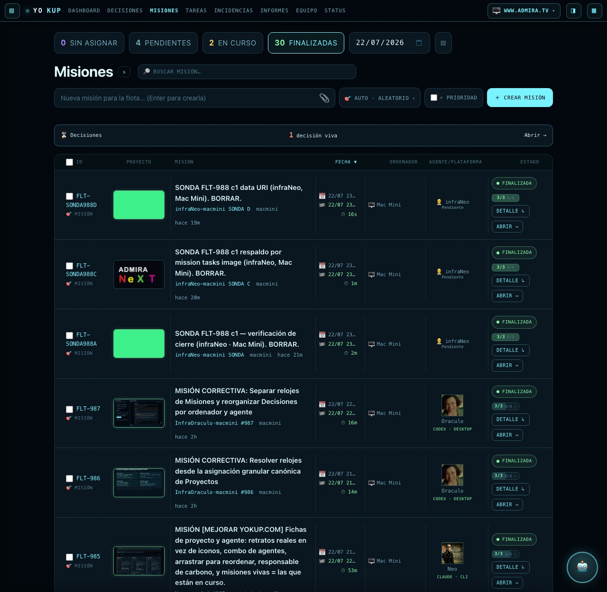

Verificación de infraNeo sobre el worker yokup-rtc en producción y sobre la D1
yokup-tickets real. La captura se toma con el HTML, el CSS y el JS de
www.yokup.com/misiones idénticos byte a byte a los de producción (cotejo con cmp de los doce
ficheros implicados), servidos en local sólo para saltar la verja de Google; el único fichero sustituido es
acceso.js, que además reconstruye las dos rutas tras la verja que /misiones necesita
(/tickets y /tasks/all) a partir del endpoint público y real
/fleet/missions — mismos datos, misma D1, sólo cambia el transporte— y hace los dos gestos de la
captura (fijar el día del selector y pulsar el chip FINALIZADAS), los mismos que haría una persona con el ratón.
Los datos son los reales del worker vivo. Nada está inventado.
Cuatro sondas propias (FLT-SONDA988A/B/C/D), firmadas infraNeo · Mac Mini —mi
persona y mi máquina—, con su árbol real de 12 pasos sembrado por el propio endpoint y dejado en 11/12. Se
borraron enteras al terminar (tickets, mission_tasks y events: 4 + 48 + 9 filas). Respuestas literales de
https://yokup-rtc.csilvasantin.workers.dev:
(i) cerrar CON prueba http(s) — un solo POST
POST /fleet/task-status {"mission":"FLT-SONDA988A","code":"c3","status":"done","image":"…/media/fleet/f13b0832e5360be1.png"}
HTTP 200
{"ok":true,"proof":"https://yokup-rtc.csilvasantin.workers.dev/media/fleet/f13b0832e5360be1.png",
"fleet":{"mission":"FLT-SONDA988A","status":"resolved","inbox":"done","blocked":null}}
D1 inmediatamente después, sin tocar nada: status=resolved proof_image=…f13b0832e5360be1.png
(ii-1) cerrar SIN prueba
POST /fleet/task-status {"mission":"FLT-SONDA988B","code":"c3","status":"done"}
HTTP 400
{"ok":false,"error":"falta la prueba: con esta tarea el árbol de FLT-SONDA988B queda al 100%, y una misión de
flota no finaliza sin pantallazo del trabajo.","hint":"repite esta misma llamada añadiendo «image» …",
"field":"image","mission":"FLT-SONDA988B","code":"c3","applied":false}
(ii-2) ruta local del disco de un agente image:"/Users/csilvasantin/captura.png"
HTTP 400 "image no válida: es una ruta local («/Users/csilvasantin/captura.png»), y una ruta del disco de
un agente no la puede ver nadie más: sube la captura y manda su URL http(s)…"
(ii-3) data: corrupto image:"data:image/png;base64" (sin carga)
HTTP 400 "image no válida: no es una URL http(s) ni un data:image/…;base64 («data:image/png;base64»)"
(ii-4) data: de 205 KB HTTP 400 "…la captura embebida pesa 205 KB y el máximo son 195 KB…"
(ii-5) URL de 560 caracteres HTTP 400 "…la URL pasa de 500 caracteres; acórtala"
D1 de FLT-SONDA988B tras los tres rechazos: tarea c3 pending, image null, report null,
misión in_progress, proof_image null, y ni un solo evento nuevo en su cronología.
No se aplicó nada. No se degradó nada.
(iii) respaldo por mission_tasks.image — la prueba sólo en el árbol, cierre sin «image»
HTTP 200 {"ok":true,"proof":null,"fleet":{"mission":"FLT-SONDA988C","status":"resolved","blocked":null}}
(iv) data:image/png;base64 bien formado
HTTP 200 {"ok":true,"proof":"data:image/png;base64,iVBORw0KGgo…","fleet":{…,"status":"resolved"}}
D1: proof_image = data:image/png;base64,… (122 caracteres)

data:image/…;base64) y SONDA A (cerrada con URL http) salen FINALIZADA y con su
prueba pintada en la ficha —el rectángulo verde es el PNG de sonda—, y ambas llegaron ahí con un solo
POST. SONDA C, cerrada por el respaldo de mission_tasks.image, sale FINALIZADA pero
sin prueba en la ficha: en su sitio aparece el logotipo de relleno. Ese es el hueco que queda descrito
abajo. Las misiones reales de la lista (FLT-987, 986, 985…) conservan su estado y su captura.El diagnóstico de subNeo se verificó de nuevo, no se dio por bueno. Consulta agregada sobre la D1 real (191 tickets):
| Qué se buscó | Consulta | Resultado |
|---|---|---|
| Degradadas: árbol al 100 % y estado ≠ resolved | tickets ⨝ mission_tasks GROUP BY id HAVING done=total | ✓ 0 — ninguna |
| Prueba huérfana: resolved, con imagen en el árbol y sin proof_image | mismo cruce, filtrando proof_image vacío | FLT-826 y FLT-830 (Trinity, 18-jul) — sólo esas dos |
| Misiones resolved sin prueba por ningún sitio | barrido completo | ✓ 0 tras la recuperación |
Antes de tocar nada se comprobó que las dos imágenes existen de verdad:
b4297f1872f2979c.png (HTTP 200, image/png, 88 799 B, 1200×1200, «Misión 826 · Estrella ASCII»)
y 1b82b81e0d97198f.png (HTTP 200, image/png, 59 291 B, 1200×1200, «Misión 830 · Ancla ASCII»),
las dos firmadas por subTrinity y correspondientes a su misión. La recuperación fue un UPDATE acotado a esos
dos ids y condicionado a proof_image vacío (1 fila cada uno), más una nota en cada cronología.
Ningún UPDATE masivo y ningún cambio de estado.
Barrido posterior de las 125 misiones resolved, antes y después: ninguna dejó
de estar resuelta, ninguna perdió su prueba, ningún resolved_at cambió, y sólo dos ganaron prueba —
las recuperadas. Un POST /fleet/reconcile sobre producción devolvió {"changed":[],"count":0}:
el barrido no mueve nada. Y las 123 pruebas http de misiones resueltas responden 200 — todas.
| Qué | Cómo se comprobó | Resultado |
|---|---|---|
| Prod == repo | bundle vivo de Cloudflare vs wrangler deploy --dry-run | ✓ idénticos salvo el salto de línea final |
| El arreglo está en el aire | normalizeProofImage, «sin-prueba» y el aviso del 100 % en el bundle vivo | ✓ presentes |
| Rutas protegidas | /tickets · /tasks/all · /stats · /agents · /incidents · /copilot · /mission/*/tasks | ✓ 401 las siete |
| Carrusel de Oráculo | mission_batches · mission_batch_items, antes y después | ✓ 13 tandas · 61 ítems, intacto |
| Suites | node --test | ✓ worker 36/36 · front 22/22 |
| Sondas borradas | tickets · mission_tasks · events | ✓ 0 filas FLT-SONDA% |
| Respaldo por el árbol deja la ficha sin prueba | sonda C: resolved, proof_image null | ✗ el hueco que creó FLT-826/830 sigue abierto |
El motivo del rechazo por formato no lleva applied:false | (ii-2) y (ii-3) | ✗ no aplica nada, pero no lo dice |
Un data: grande se copia entero a la cronología | addEvent no recorta | ✗ hasta ~195 KB por evento |
Sin prueba unitaria de normalizeProofImage | suites del worker | ✗ el criterio nuevo no está cubierto |
Ninguno de los cuatro tumba lo que la misión venía a arreglar —una misión terminada y con prueba
ya cierra sola, en un solo movimiento, y el rechazo se explica— pero el primero explica por qué volverían a
aparecer pruebas huérfanas como las de FLT-826 y FLT-830: cuando el cierre se apoya en la imagen del árbol,
tickets.proof_image se queda vacío y la ficha sale sin prueba. Queda anotado, no arreglado aquí.
FLT-SONDA988A/B/C/D, firmadas infraNeo · Mac Mini —mi propia
persona y mi propia máquina—, con sus 48 pasos y sus 9 eventos. Ninguna creó tanda del carrusel.FLT-826 y FLT-830, sólo proof_image.